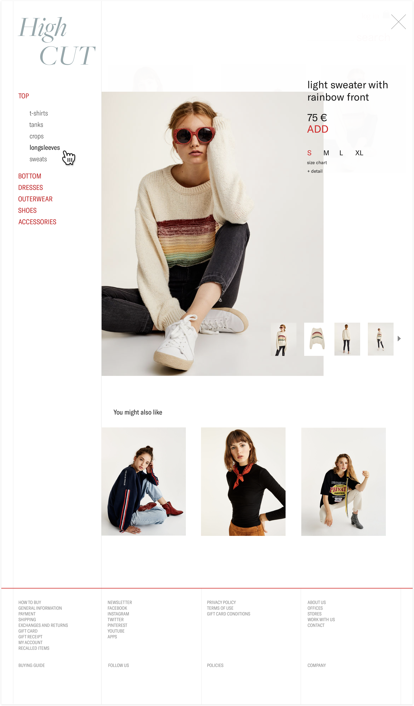
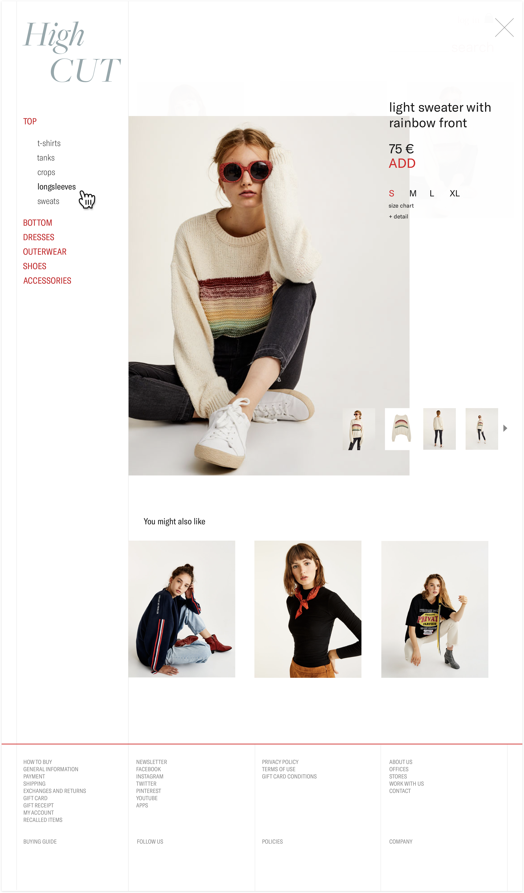

Background
High CUT began as a college assignment where I was tasked with designing and coding my own e-commerce store. Since I was in charge of delivering the whole site from start to end, I was able to think about the experience wholistically from both a design and development perspective. While designing this project, I placed a great emphasis on creating a seamless shopping experience with minimum page loads, clear-cut product selections, and especially a chic, minimalist interface.
 
